Herbst in Graz - Das Klanglicht Festival
 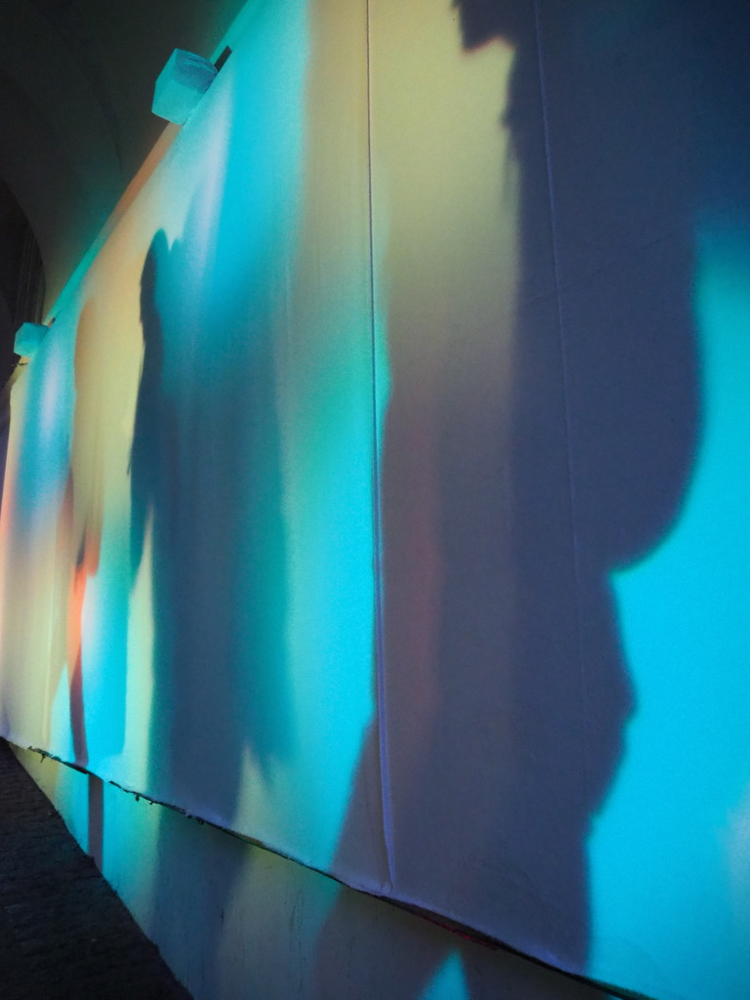
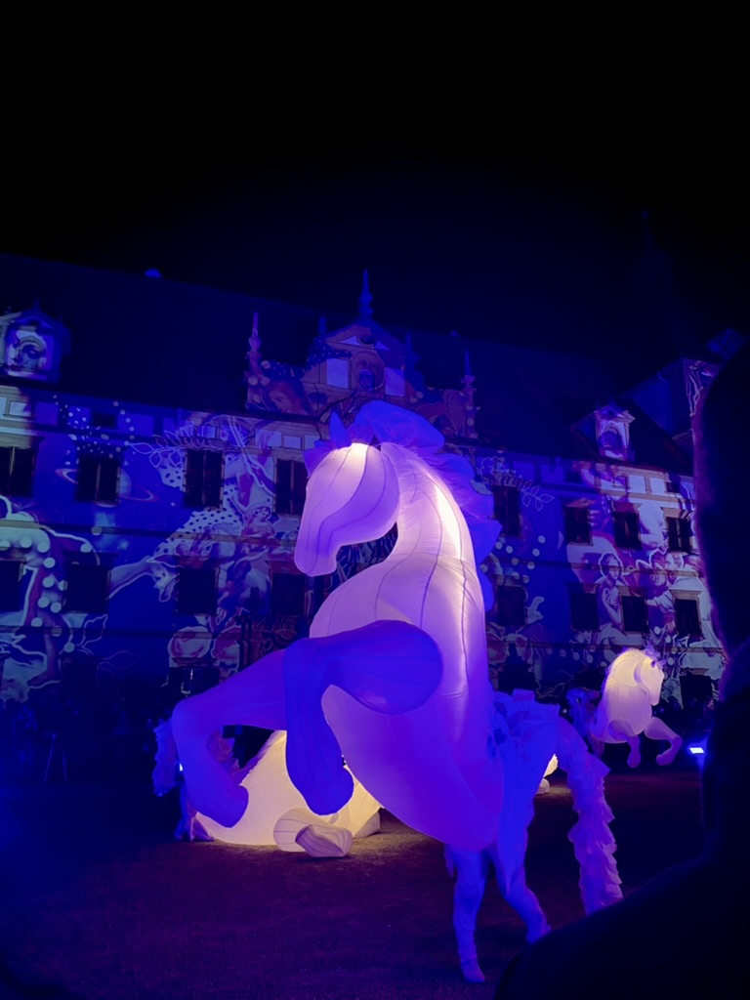
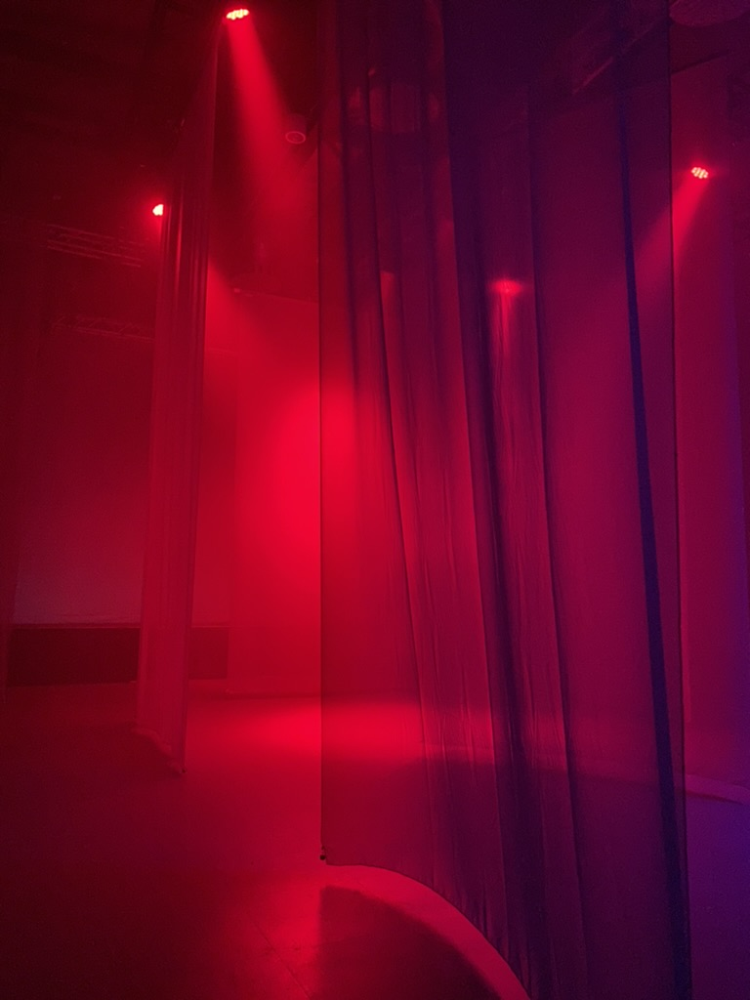
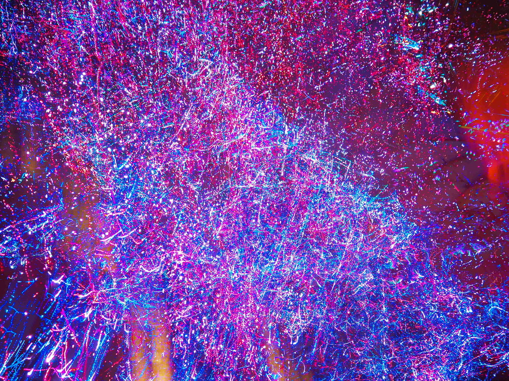
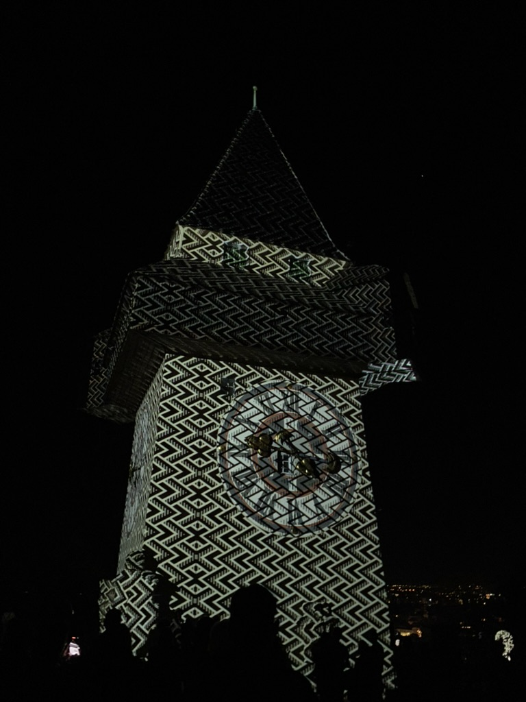
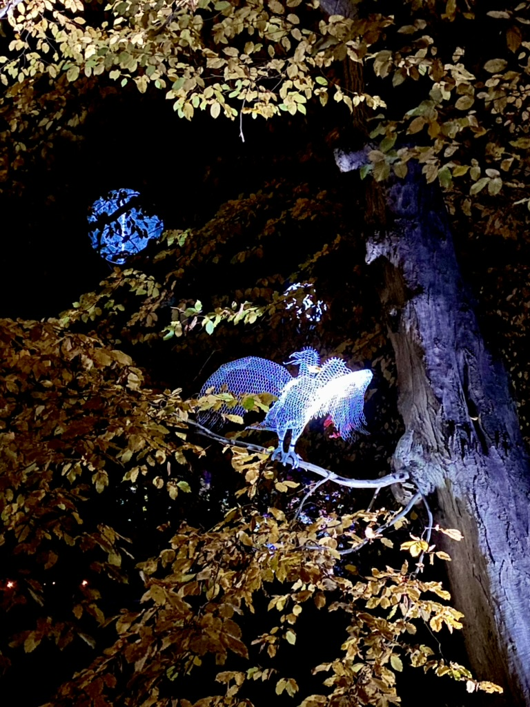
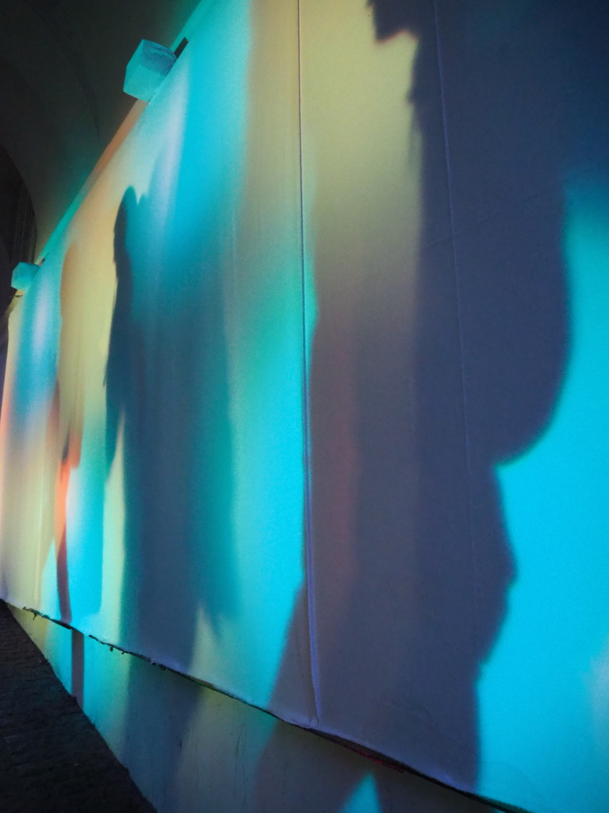
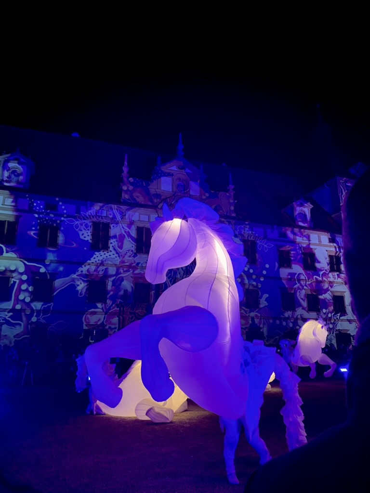
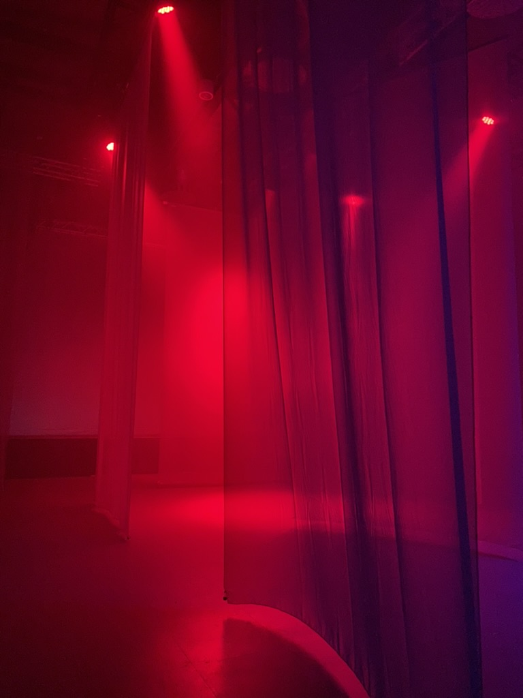
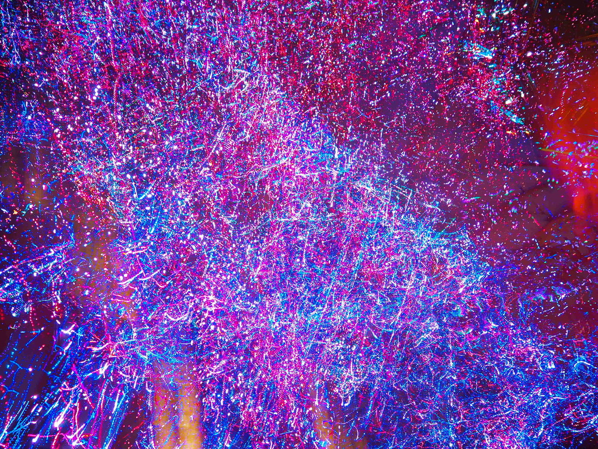
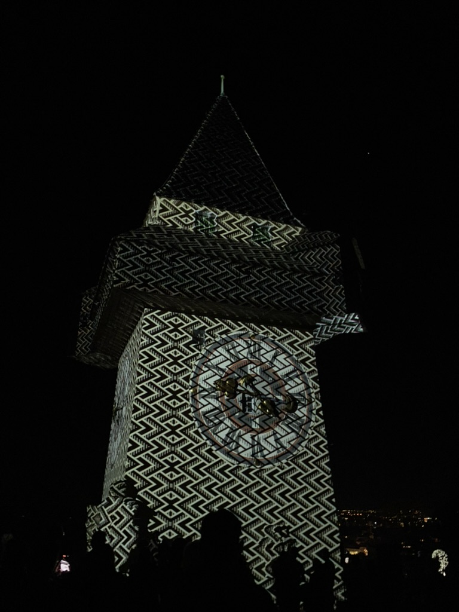
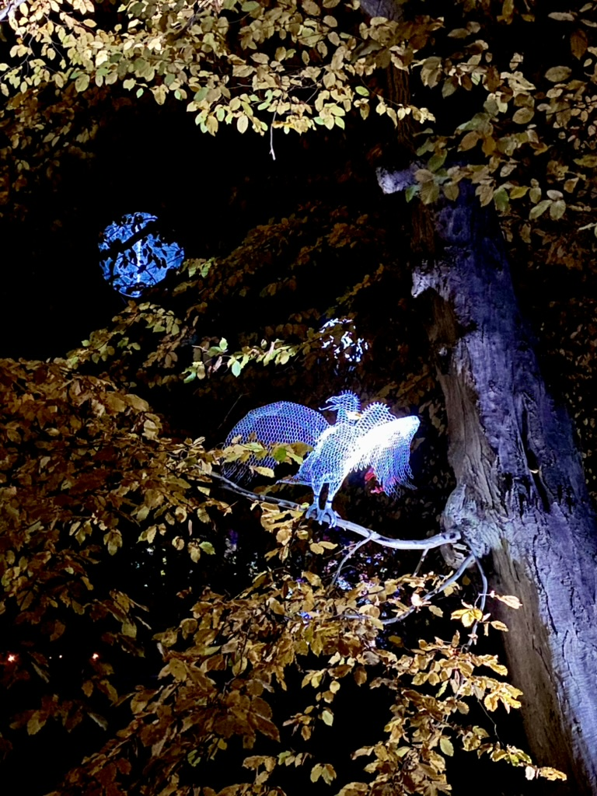
Das Klanglicht Festival verwandelt Graz einmal im Herbst in eine riesige Freiluftgalerie für Licht- und Klangkunst. Wenn die Dämmerung hereinbricht, erstrahlen historische Gebäude, Plätze und Parks in einem neuen, oft magischen Licht. Internationale und nationale Künstler inszenieren beeindruckende Installationen, die zum Staunen und Nachdenken anregen. Einmal sollte man beim Klanglicht dabei sein, es ist doch etwas Besonderes, wenn die Stadt in bunten Lichtinstallationen aufleuchtet.
Obwohl sich die Lichtinstallationen in jedem Jahr leider oft sehr ähneln und es wenig wirklich Neues oder tatsächlich Schönes gibt, und auch die klangliche Untermalung meist eher eine Kakophonie als ein Genuss ist, lohnt sich der einmalige Besuch. Es ist faszinierend zu sehen, wie vertraute Orte in ein völlig neues Licht getaucht werden und eine andere Atmosphäre annehmen. Besonders schön war bisher lediglich das Klanglicht Festival, das im Schloss Eggenberg stattgefunden hat, da dort die Kulisse und die Weitläufigkeit eine besondere Wirkung entfalten konnten. Trotz der Kritikpunkte ist es ein Event, das man zumindest einmal erlebt haben sollte, um die Stadt von einer ganz anderen, erleuchteten Seite kennenzulernen.
Fun-Facts zum Klanglicht Festival:
- Einzigartige Kulisse: Historische Gebäude wie das Schauspielhaus, das Landesmuseum Joanneum oder das Kunsthaus werden zu Leinwänden für die Lichtinstallationen.
- Interaktive Elemente: Manchmal gibt es auch interaktive Installationen, bei denen Besucher selbst Teil des Kunstwerks werden können.
- Besucherandrang: Das Festival zieht jedes Jahr Tausende von Besuchern an, die durch die erleuchtete Stadt flanieren.
- Nächtliche Entdeckungstour: Es ist eine tolle Möglichkeit, Graz auch bei Nacht zu erkunden und bekannte Orte aus einer neuen Perspektive zu sehen.